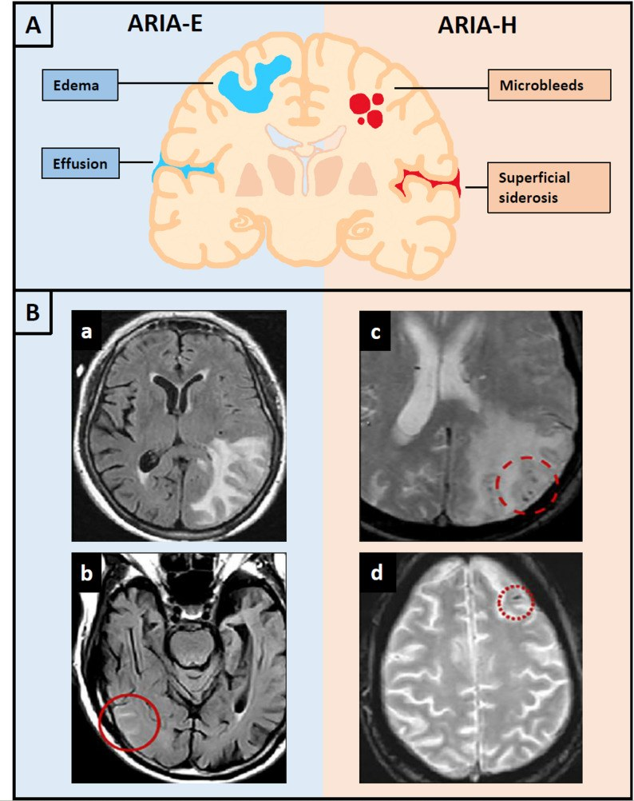
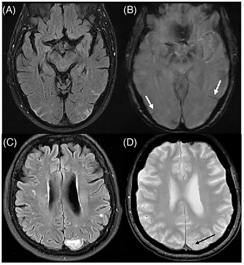
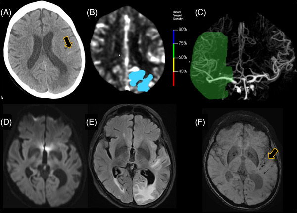
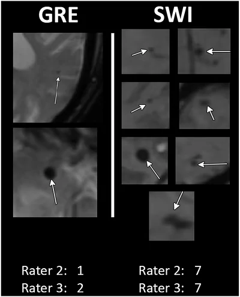

3029 — ARIA khi dùng kháng thể kháng amyloid (lecanemab/donanemab): ARIA-E vs ARIA-H, phân độ MRI, sàng lọc CAA và lịch theo dõi
Tags: pattern:aria-e pattern:aria-h pattern:phu-van-mach pattern:vi-chay-mau-thuy pattern:siderosis-vo-nao vung:nao score:ARIA-severity protocol:MRI-ARIA protocol:MRI-SWI incidentaloma:vi-chay-mau
Mức chắc chắn (certainty): tổng hợp y văn (literature synthesis) — ghép tổng quan có hệ thống hoá 62 nguồn về lecanemab/donanemab (Neurol Int 2026, PMCID PMC13610423), tổng quan cơ chế – hình ảnh – phân độ ARIA kèm bảng phân độ MRI (Alzheimers Res Ther 2026, PMC13063504), bài tổng quan ARIA trong liệu pháp kháng amyloid (Alzheimer's Dement 2026, PMC13099593), khung khu vực về phát hiện – xử trí ARIA (J Prev Alzheimers Dis 2026, PMC12854975), nghiên cứu so sánh GRE vs SWI khi sàng lọc (Alzheimers Dement (DADM) 2026, PMC13575324), nghiên cứu MRI 3D tăng tốc cho theo dõi ARIA (Alzheimer's Dement 2026, PMC13093291) và phân tích tín hiệu an toàn hậu mại (Ther Adv Drug Saf 2026, PMC13487121). Đây là lĩnh vực rất mới (2023–2026), nhiều dữ liệu hậu mại còn mỏng → ghi rõ chỗ chưa chắc.
Câu hỏi thực hành: bệnh nhân 74 tuổi, suy giảm nhận thức nhẹ do Alzheimer đã xác nhận bằng PET amyloid, APOE ε4 dị hợp tử, bắt đầu lecanemab. Tháng thứ 3, sau đợt tăng liều, bệnh nhân đau đầu và lú lẫn nhẹ; MRI cho thấy vùng tăng tín hiệu FLAIR ở chất trắng dưới vỏ thái dương–chẩm trái. Câu hỏi: đây là ARIA-E hay nhồi máu, mức độ nào, có phải ngừng thuốc, và lịch MRI tiếp theo ra sao — và quan trọng hơn: trên MRI nền trước điều trị, dấu hiệu nào khiến bệnh nhân này không được điều trị ngay từ đầu. Bài chốt theo hai trục: (1) chuỗi xung — FLAIR cho ARIA-E, T2*/SWI cho ARIA-H, DWI để loại nhồi máu; (2) ngưỡng kích thước và số lượng quyết định tiếp tục / tạm ngừng / ngừng vĩnh viễn. Nối 3027 – Xuất huyết thùy do CAA ở người già, 201 – Protocol CT/MRI sọ não, 229 – PACNS vs RCVS, 212 – Xuất huyết sọ.
1. Tổng quan bệnh học – cơ chế hình ảnh: vì sao ARIA-E là NƯỚC và ARIA-H là SẮT
- Cơ chế: kháng thể kháng amyloid gắn mảng amyloid trong nhu mô và amyloid trong thành mạch, hoạt hoá bổ thể và phản ứng viêm quanh mạch; amyloid được huy động ra lòng mạch để thải. Hai hậu quả hình ảnh tách biệt:
- ARIA-E (edema/effusion): thành mạch tăng tính thấm → dịch huyết tương rò vào chất trắng quanh mạch (phù vận mạch) và vào rãnh (tràn dịch rãnh — sulcal effusion).
- ARIA-H (hemorrhage): thành mạch tổn thương thực sự → hồng cầu thoát mạch → vi chảy máu vỏ não hoặc siderosis màng mềm (hemosiderin lắng dọc rãnh); hiếm hơn là xuất huyết thùy lớn.
- TẠI SAO ARIA-E sáng trên FLAIR/T2: phù vận mạch làm tăng lượng nước tự do trong mô → kéo dài T2 → tăng tín hiệu trên T2 và FLAIR; không phải hiện tượng hạn chế khuếch tán vì tế bào không bị phù độc → ADC không giảm (đây là điểm phân biệt với nhồi máu cấp).
- TẠI SAO ARIA-H đen trên T2/SWI:* hồng cầu thoát mạch được đại thực bào chuyển thành hemosiderin/ferritin — thuận từ mạnh → làm T2 ngắn lại* → mất tín hiệu, và hiệu ứng blooming làm tổn thương 2 mm trông to hơn. Vì vậy SWI nhạy hơn GRE và đo trên ảnh gốc, không đo trên ảnh MinIP.
- Ngưỡng định lượng:
- Tần suất ARIA-E: lecanemab 12,6% (giả dược 1,7%), donanemab 24,0% (giả dược 2,1%); ARIA-H: 17,3% (lecanemab) và 31,4% (donanemab) (PMC13610423).
- ARIA có triệu chứng: ARIA-E 2,8% (lecanemab) và 6,1% (donanemab) trong thử nghiệm then chốt; gộp các thử nghiệm pha 3: 2,8–5,8% ARIA-E và 1,0–1,2% ARIA-H có triệu chứng (PMC13063504).
- Mức độ nặng trên MRI: ARIA-E nặng 2,1–11,5%, ARIA-H nặng 3,5–6,4% các ca (PMC13063504).
- Phần lớn KHÔNG triệu chứng: khoảng 75% ca ARIA được phát hiện tình cờ trên MRI theo lịch (PMC13099593); ~80% ARIA-E do lecanemab tan trong vòng 4 tháng, 96% ARIA-E do donanemab tan trong trung bình 2 tháng; ~80% triệu chứng ARIA hết hoàn toàn (PMC13063504).
- Thời điểm: ARIA tập trung sau các liều đầu, giữa tháng 2 và tháng 6; hầu hết trong 3–6 tháng đầu (PMC13099593, PMC12854975).
- Yếu tố nguy cơ mạnh nhất — APOE ε4: ARIA-E 5,4% (không mang) / 10,9% (dị hợp) / 32,6% (đồng hợp) với lecanemab; 15,7% / 22,8% / 40,6% với donanemab (PMC13610423). Gộp lại: ARIA-E ở APOE4(+) 34,5% vs 6,5% (≈ 5 lần); ARIA-H 21,4% vs 11,9%; ARIA có triệu chứng 6,1–11,2% ở ε4/ε4 so với 1,6–2,6% ở người không mang (PMC13063504).
- Bệnh mạch nền làm tăng nguy cơ: trong phân tích gộp 3.030 người dùng donanemab, các yếu tố độc lập gồm số alen APOE ε4, số vi chảy máu nền, siderosis vỏ não (cSS), gánh nặng amyloid nền, huyết áp động mạch trung bình cao (PMC13610423).
- CAA đi cùng Alzheimer tới 80% — nghĩa là phần lớn bệnh nhân đủ tiêu chuẩn điều trị đã có sẵn bệnh mạch amyloid ở mức nào đó (PMC13063504). Đây chính là cầu nối sang bài 3027.
2. Mẫu hình + chẩn đoán phân biệt theo vị trí và theo chuỗi xung (gamut)
- Mẫu hình cốt lõi: bệnh nhân Alzheimer giai đoạn sớm, đang dùng kháng thể kháng amyloid, xuất hiện đau đầu, lú lẫn, chóng mặt, rối loạn dáng đi, thay đổi thị giác, co giật hoặc khiếm khuyết khu trú trong 6 tháng đầu → nghĩ ARIA cho đến khi loại trừ.
- Gamut theo chuỗi xung — ba câu hỏi:
- FLAIR: có phù/tràn dịch rãnh không? → ARIA-E · nhồi máu · CAA thể viêm (CAA-ri) · PRES · u · viêm.
- T2/SWI: có mất tín hiệu mới không?* → ARIA-H (vi chảy máu, siderosis) · CAA · máu tụ cũ · vôi hoá · khí · kim loại.
- DWI: có hạn chế khuếch tán không? → nhồi máu cấp (ARIA-E không hạn chế khuếch tán).
- Gamut theo vị trí:
- Chất trắng dưới vỏ (subcortical white matter): ARIA-E (phù vận mạch), CAA-ri (phù không đối xứng), PRES (thường vùng đỉnh–chẩm, hai bên), u thần kinh đệm.
- Vỏ não – màng mềm (cortical, leptomeningeal): ARIA-H vi chảy máu vỏ não, siderosis màng mềm, xuất huyết dưới nhện vùng lồi (cSAH) do CAA.
- Thùy não (lobar): xuất huyết thùy lớn — biến chứng hiếm nhưng nặng của ARIA-H/CAA.
- Vùng mạch máu (vascular territory): nếu tổn thương tôn trọng đúng một lãnh thổ động mạch → nhồi máu, không phải ARIA.
- Gợi nhớ "ARIA" khi đọc MRI: Asymmetry của phù Rãnh có dịch Intact diffusion (không hạn chế khuếch tán) ApoE ε4 làm nặng thêm.
3. Bảng so sánh phân biệt (ma trận đối chiếu)
| Thực thể (entity) | Hình ảnh điển hình | Chốt vào (rule-in) | Chốt loại (rule-out) | Gợi ý xác nhận |
|---|---|---|---|---|
| ARIA-E | Tăng tín hiệu FLAIR ở chất trắng dưới vỏ, đối xứng hoặc không, ± tràn dịch rãnh; không hạn chế khuếch tán; thường không ngấm thuốc | Đang dùng kháng thể kháng amyloid + phù mới + ADC không giảm + không theo lãnh thổ mạch | DWI hạn chế + ADC tối + theo đúng một vùng mạch → nhồi máu | MRI FLAIR + DWI/ADC + T2*/SWI; so MRI nền |
| ARIA-H (vi chảy máu) | Nốt mất tín hiệu tròn 2–10 mm trên T2*/SWI, không phù quanh, thường vỏ–dưới vỏ | ≥ 1 vi chảy máu MỚI so với MRI nền trong khi đang điều trị | Mất tín hiệu dạng đường/chấm theo mạch, có nhánh → mạch máu/DVA, không phải vi chảy máu | SWI (ưu tiên), đối chiếu ảnh nền; đếm và ghi vị trí |
| ARIA-H (siderosis màng mềm, cSS) | Dải mất tín hiệu cong bám mặt vỏ não, cả hai mặt rãnh | cSS mới/xấu đi + đang điều trị | Máu tồn dư sau mổ/chấn thương khu trú; mạch máu chảy chậm | SWI + ảnh phase; so phim cũ |
| CAA (bệnh mạch amyloid, không do thuốc) | Vi chảy máu thùy + cSS + cSAH vùng lồi, không có tổn thương sâu, tuổi > 50 | Boston 2.0 probable CAA trên MRI nền TRƯỚC khi bắt đầu thuốc | Có vi chảy máu/ICH sâu → không đủ probable CAA | MRI 3T SWI + T2/FLAIR; áp dụng Boston 2.0 (bài 3027) |
| CAA-ri / ABRA (thể viêm) | Phù không đối xứng lan tỏa hoặc nhiều ổ, có thể choán chỗ, kèm dấu hiệu CAA | Phù + dấu hiệu CAA + không dùng kháng thể kháng amyloid (hoặc xuất hiện sau nhiều tháng) | Phù xuất hiện đúng cửa sổ ARIA khi đang dùng thuốc → ARIA-E cho đến khi chứng minh ngược lại | MRI trước–sau corticoid; loại trừ nhiễm |
| Nhồi máu não cấp | Tổn thương theo lãnh thổ mạch, DWI hạn chế/ADC tối, có thể tắc mạch lớn | DWI hạn chế + ADC tối + theo vùng mạch | ADC bình thường + phù lan ngoài lãnh thổ → ARIA-E | DWI/ADC, MRA/CTA, thang ASPECTS |
| PRES | Phù hai bên, đối xứng, vùng đỉnh–chẩm, kèm tăng huyết áp | Phù đối xứng + HA cao + hồi phục khi kiểm soát HA | Phù một bên, không tăng HA, đang dùng kháng amyloid → ARIA-E | MRI; theo dõi huyết áp; chụp lại sau 2–4 tuần |
| Xuất huyết thùy lớn (macrohemorrhage) | Khối tăng tỷ trọng trên CT hoặc máu tụ trên MRI, có thể có mức dịch | Máu tụ thùy mới + đang điều trị | Chỉ có vi chảy máu < 10 mm → ARIA-H nhẹ, không phải macrohemorrhage | CT cấp; MRI SWI sau ổn định |

(A) Sơ đồ: ARIA-E = phù (edema) và tràn dịch rãnh (effusion); ARIA-H = vi chảy máu (microbleeds) và siderosis màng mềm. (B) Ảnh thật: a — phù vận mạch lớn vùng chẩm trái trên FLAIR; b — ổ phù nhỏ (vòng đỏ); c — mất tín hiệu do vi chảy máu/siderosis trên chuỗi nhạy từ; d — vi chảy máu dạng chấm vùng đỉnh phải (vòng đỏ). Nguồn: Alzheimers Res Ther 2026 (PMC13063504), Figure 1, CC BY 4.0. Không crop.Phân độ ARIA trên MRI — bảng quyết định (nguồn: PMC13063504, Table 1)
| Thể | Nhẹ (mild) | Trung bình (moderate) | Nặng (severe) |
|---|---|---|---|
| ARIA-E — kích thước vùng tăng tín hiệu FLAIR (rãnh, vỏ/dưới vỏ) | < 5 cm ở một vị trí | 5–10 cm ở một vị trí, hoặc < 10 cm ở nhiều vị trí | > 10 cm ở một hoặc nhiều vị trí, kèm phù vỏ (gyral swelling) và xoá rãnh |
| ARIA-H — số vi chảy máu MỚI | 1–4 | 5–9 | ≥ 10 |
| ARIA-H — số ổ siderosis vỏ não khu trú | 1 | 2 | ≥ 3 |
- Cách dùng bảng: phân độ theo hình ảnh, nhưng quyết định điều trị cần cả hình ảnh lẫn lâm sàng — ARIA nặng về hình ảnh mà không triệu chứng vẫn là nặng, và ngược lại triệu chứng nặng dù ảnh nhẹ cũng là nặng.
- Lưu ý đọc ảnh: ARIA-E có thể chỉ là tràn dịch rãnh (không có phù nhu mô) — đừng bỏ qua; đo đường kính lớn nhất trên FLAIR, ghi số vị trí và có phù vỏ/xoá rãnh hay không vì đó là tiêu chí "nặng".

Bệnh nhân 1 (A, B): ARIA-E trung bình — FLAIR (A) có tràn dịch rãnh vùng chẩm hai bên và thái dương sau trái + phù vận mạch chẩm trái; SWI (B) có dải mất tín hiệu = siderosis màng mềm (mũi tên trắng) — ARIA-H trung bình. Bệnh nhân 2 (C, D): ARIA-E nhẹ và ARIA-H nhẹ. Nguồn: Alzheimer's Dement 2026 (PMC13099593), Figure 2, CC BY 4.0. Không crop.4. Protocol chụp + lịch theo dõi + tiêu chuẩn loại trừ (hệ phân độ)
4.1 Chuỗi xung tối thiểu — bộ "ARIA protocol"
- Bắt buộc: FLAIR (phát hiện ARIA-E, kể cả tràn dịch rãnh) + T2* GRE hoặc SWI (ARIA-H) + DWI/ADC (loại nhồi máu) + T2 + T1 (cấu trúc, teo, mốc so sánh).
- Ưu tiên SWI hơn GRE: cùng một bệnh nhân, GRE đếm 1–2 vi chảy máu trong khi SWI đếm 7; SWI còn phân biệt siderosis thật với mạch máu/DVA (GRE hay đọc nhầm mạch là vi chảy máu) (PMC13575324). Nếu chỉ có GRE, nguy cơ đếm thiếu → bỏ sót tiêu chuẩn loại trừ.
- Tăng tốc: chuỗi 3D FLAIR và SWI tăng tốc (Wave-CAIPI) giảm tới 56% thời gian chụp, độ nhạy/độ đặc hiệu cho ARIA-E = 1,00, mức độ nặng tương đương (PMC13093291) — phù hợp để rút ngắn buổi chụp ở người sa sút trí tuệ khó nằm yên.
- Đo và ghi báo cáo: với ARIA-E ghi cm lớn nhất, số vị trí, có phù vỏ/xoá rãnh, có tràn dịch rãnh; với ARIA-H ghi số vi chảy máu mới (và tổng), số ổ cSS, vị trí thùy/sâu; luôn so với MRI nền vì tiêu chuẩn là "mới".
4.2 Lịch MRI — theo nhãn thuốc, không theo thói quen
| Thuốc | MRI nền | MRI trong điều trị |
|---|---|---|
| Lecanemab | Trong 12 tháng trước liều đầu | Trước truyền lần 5, lần 7, lần 14 (nhãn); FDA bổ sung một lần chụp sớm giữa truyền lần 2 và lần 3 sau khi ghi nhận 2 ca ARIA-E sớm tử vong |
| Donanemab | Trong 12 tháng trước liều đầu | Trước truyền lần 2, 3, 4 và 7 (theo khuyến cáo sử dụng thích hợp + nhãn FDA) |
| Cả hai | Bắt buộc SWI/GRE để đếm vi chảy máu + tìm cSS | Chụp ngay khi có triệu chứng, không chờ lịch; sau một ca ARIA → MRI hàng tháng đến khi ổn định/tan |
- Vì sao dày ở đầu: ARIA tập trung tháng 2–6, tức quanh các liều đầu và các mốc tăng liều — nên lịch chụp dày nhất trong 6 tháng đầu.
- Vì sao cần "chụp ngay khi có triệu chứng": ARIA bắt chước đột quỵ (xem ca 2 dưới đây); nếu chỉ chờ lịch, cửa sổ can thiệp bị bỏ qua và bệnh nhân có thể bị tiêu sợi huyết nhầm — đúng tình huống đã gây xuất huyết thùy lan tỏa ở một ca được báo cáo.
4.3 Tiêu chuẩn LOẠI TRỪ trên MRI nền (phần quan trọng nhất của bài)
- Hoa Kỳ (thực hành, không phải chống chỉ định tuyệt đối trên nhãn): loại khỏi điều trị khi có > 4 vi chảy máu, ≥ 1 xuất huyết lớn (macrohemorrhage), ≥ 1 ổ siderosis vỏ não, hoặc bằng chứng ABRA/CAA-ri (PMC13063504).
- EU/Anh: xuất huyết não hoặc CAA trên MRI nền là CHỐNG CHỈ ĐỊNH với cả hai thuốc; EU khuyến cáo không dùng lecanemab nếu có ≥ 2 vi chảy máu thùy (theo Boston v1); thay đổi chất trắng nặng là chống chỉ định với donanemab theo EMA/MHRA.
- Khác biệt vùng miền này là cạm bẫy thực hành: cùng một MRI có thể được điều trị ở nơi này và bị loại ở nơi khác → đọc báo cáo MRI phải ghi rõ số vi chảy máu, không chỉ ghi "không có bất thường".
- Ngưỡng khác cần nhớ: huyết áp không kiểm soát tốt là chống chỉ định với donanemab ở EU; thuốc chống kết tập tiểu cầu có thể tiếp tục (không làm tăng ARIA rõ), nhưng kháng đông đi cùng lecanemab làm xuất huyết lớn tăng từ 0,6% lên 2,7% (PMC13063504) → phải hội chẩn trước khi bắt đầu và tuyệt đối không dùng tiêu sợi huyết theo kinh nghiệm khi chưa loại ARIA.
flowchart TD
A["Bệnh nhân Alzheimer giai đoạn sớm<br/>được chỉ định kháng thể kháng amyloid"] --> B["MRI nền trong 12 tháng<br/>FLAIR, T2*, SWI, DWI, T1"]
B --> C{"Có chống chỉ định trên MRI?<br/>trên 4 vi chảy máu, cSS,<br/>xuất huyết lớn, CAA-ri/ABRA"}
C -->|Có| D["KHÔNG điều trị<br/>ghi rõ số vi chảy máu và cSS trong báo cáo"]
C -->|Không| E["Xét APOE, huyết áp, kháng đông<br/>tư vấn nguy cơ ARIA"]
E --> F["Bắt đầu thuốc + MRI theo lịch<br/>dày nhất trong 6 tháng đầu"]
F --> G{"Có triệu chứng mới<br/>hoặc ARIA trên MRI theo lịch?"}
G -->|Không| F
G -->|Có| H["MRI NGAY: FLAIR, SWI, DWI"]
H --> I{"Phân độ ARIA<br/>và có triệu chứng?"}
I -->|Nhẹ, không triệu chứng| J["Tiếp tục thuốc<br/>MRI hàng tháng đến khi tan"]
I -->|Trung bình hoặc có triệu chứng| K["TẠM NGỪNG thuốc<br/>MRI hàng tháng; cân nhắc corticoid"]
I -->|Nặng: trên 10 cm, phù vỏ,<br/>trên 10 vi chảy máu, trên 3 ổ cSS| L["NGỪNG VĨNH VIỄN<br/>MRI ngay + điều trị nội khoa tích cực"]
J --> M{"ARIA đã tan/ổn định?"}
K --> M
M -->|Có| N["Hội chẩn quyết định dùng lại<br/>theo mức độ và nguyện vọng"]
M -->|Không| H
5. Biến thể bình thường và cạm bẫy
- Biến thể/giả tổn thương:
- Mạch máu cắt ngang tạo chấm mất tín hiệu trên GRE — trên SWI thấy dạng đường có nhánh, hoặc DVA với tĩnh mạch dẫn lưu. GRE hay đọc nhầm thành vi chảy máu/siderosis → loại oan bệnh nhân (PMC13575324).
- Vôi hoá mạch mạc treo, tuyến tùng, hạch nền mất tín hiệu trên T2*/SWI — đọc kèm CT và đối xứng.
- Khí nội sọ, kim loại, mảnh đạn, kẹp phẫu thuật gây mất tín hiệu lớn — xem ảnh phase và tiền sử.
- Thay đổi chất trắng do tuổi (Fazekas) tăng tín hiệu FLAIR đối xứng quanh não thất — khác ARIA-E (thường dưới vỏ, không đối xứng, xuất hiện mới).
- Cạm bẫy chết người:
- Không chụp SWI/GRE ở MRI nền. Không đếm được vi chảy máu → không sàng lọc được CAA → bệnh nhân nguy cơ cao nhất lại được điều trị.
- Báo cáo "không bất thường" mà không đếm. Tiêu chuẩn loại trừ là con số (> 4 vi chảy máu; ≥ 2 vi chảy máu thùy ở EU/Anh) → phải ghi số.
- Gọi ARIA-E là nhồi máu rồi dùng tiêu sợi huyết. ARIA-E không hạn chế khuếch tán; dùng tPA nhầm đã gây xuất huyết thùy lan tỏa trong ca được báo cáo (PMC13099593).
- Đo ARIA-E bằng cm trên ảnh không phải FLAIR hoặc không ghi số vị trí → phân độ sai (mild vs moderate) → quyết định ngừng/tiếp tục sai.
- Đo vi chảy máu trên ảnh MinIP/blooming → đếm quá mức và loại oan bệnh nhân; đo trên ảnh gốc, đối chiếu ảnh nền.
- Bỏ qua ARIA-H "đơn độc". ARIA-H có thể xuất hiện không kèm ARIA-E — nếu ARIA-E thoáng qua không được chụp kịp thì chỉ còn ARIA-H làm chứng.
- Tiếp tục thuốc khi có ARIA trung bình không triệu chứng. Khuyến cáo là tạm ngừng + MRI hàng tháng khi trung bình trên MRI hoặc có triệu chứng — không "chờ xem".
- Cho rằng thuốc "an toàn vì ARIA phần lớn không triệu chứng". Vẫn có xuất huyết lớn (2,7% khi dùng kháng đông), co giật, bệnh não, và tử vong đã báo cáo; lợi ích trung bình là khiêm tốn (CDR-SB 0,45 điểm ở 18 tháng; iADRS 3,25 điểm ở 76 tuần) (PMC13610423).

Bệnh nhân nữ đầu 70 tuổi đang dùng kháng thể kháng amyloid, nhập viện vì mất ngôn ngữ, yếu tay phải, lú lẫn. (A) CT không cản quang: xuất huyết dưới nhện trán trái (mũi tên) + phù vận mạch thùy đỉnh trái còn giữ vỏ (cortical sparing). (B) Phần mềm đột quỵ tự động đánh dấu vùng giảm tỷ trọng 5–12 HU. (C) CTA: giảm 60–75% mật độ mạch vùng động mạch não giữa trái — giả tắc mạch do phù chèn ép. (D–F) DWI/FLAIR/SWI: phù không hạn chế khuếch tán, kèm siderosis (mũi tên vàng). Đây là ARIA giả đột quỵ — dùng tiêu sợi huyết sẽ gây chảy máu. Nguồn: Alzheimer's Dement 2026 (PMC13099593), Figure 3, CC BY 4.0. Không crop.6. Tự lượng giá — Blind Quiz
Ca 1 — Nam 71 tuổi, Alzheimer giai đoạn sớm, đang lecanemab tháng thứ 4. Đau đầu và nhìn mờ thoáng qua. Nhìn 4 ô MRI, phân loại trước khi mở đáp án.
- Câu hỏi: (a) Ô A và B mô tả gì, phân độ nào? (b) Ô C và D là thể ARIA nào? (c) Bước tiếp theo với thuốc và lịch chụp?
Bấm để hiện đáp án
- (a) Ô A (FLAIR): tràn dịch rãnh vùng chẩm hai bên + thái dương sau trái và phù vận mạch chẩm trái → ARIA-E trung bình (nhiều vị trí, mỗi ổ < 10 cm). Ô B (SWI): dải mất tín hiệu màng mềm = siderosis → ARIA-H trung bình (2 ổ cSS).
- (b) Ô C–D: ARIA-E nhẹ (ổ phù nhỏ) và ARIA-H nhẹ (vi chảy máu dạng chấm).
- (c) Tạm ngừng thuốc (vì trung bình trên MRI, dù triệu chứng nhẹ) + MRI hàng tháng đến khi ARIA-E tan/ARIA-H ổn định; hội chẩn dùng lại khi ổn định. Nếu là nặng (> 10 cm, phù vỏ, ≥ 10 vi chảy máu, ≥ 3 ổ cSS) → ngừng vĩnh viễn.
- Nguồn ảnh: Alzheimer's Dement 2026 (PMC13099593), Figure 2 — CC BY 4.0.
Ca 2 — Nữ 72 tuổi đang điều trị kháng amyloid, nhập viện vì yếu nửa người phải và mất ngôn ngữ. Nhìn 6 ô ảnh: có nên dùng tiêu sợi huyết?
- Câu hỏi: (a) Dấu hiệu trên CT (A) và tại sao phần mềm đột quỵ "báo động" ở (B)–(C)? (b) DWI (D) nói gì? (c) Quyết định điều trị và cái bẫy?
Bấm để hiện đáp án
- (a) (A) Xuất huyết dưới nhện vùng lồi trán trái + phù vận mạch thùy đỉnh trái còn giữ vỏ; (B) phần mềm đánh dấu vùng giảm 5–12 HU — ngưỡng của nó dành cho nhồi máu, không dành cho phù ARIA; (C) CTA giảm 60–75% mật độ mạch vùng não giữa trái do phù chèn ép vi mạch, không phải tắc thật.
- (b) DWI không hạn chế khuếch tán → không phải nhồi máu cấp; phù là vận mạch.
- (c) KHÔNG dùng tiêu sợi huyết — đây là ARIA giả đột quỵ; tPA ở bệnh nhân có ARIA/CAA đã gây xuất huyết thùy lan tỏa. Xử trí: ngừng thuốc kháng amyloid, MRI theo dõi, điều trị nội khoa; hội chẩn thần kinh–đột quỵ trước mọi quyết định tái thông.
- Nguồn ảnh: Alzheimer's Dement 2026 (PMC13099593), Figure 3 — CC BY 4.0.
Ca 3 — Bệnh nhân 69 tuổi chuẩn bị điều trị lecanemab. Trên ảnh, GRE và SWI cho số vi chảy máu khác nhau. Bệnh nhân có đủ tiêu chuẩn không?

- Câu hỏi: (a) GRE đếm bao nhiêu, SWI đếm bao nhiêu? (b) Vì sao khác biệt này thay đổi quyết định điều trị? (c) Chuỗi xung nào nên dùng làm chuẩn?
Bấm để hiện đáp án
- (a) GRE: 1–2 vi chảy máu (hai người đọc khác nhau); SWI: 7 vi chảy máu (cả hai người đọc đều thấy 7).
- (b) Vì tiêu chuẩn loại trừ tính bằng số vi chảy máu: > 4 (thực hành Hoa Kỳ) hoặc ≥ 2 vi chảy máu thùy (EU/Anh với lecanemab). Đếm bằng GRE → bệnh nhân "đủ tiêu chuẩn"; đếm bằng SWI → 7 vi chảy máu = loại trừ. Sai chuỗi xung = đưa bệnh nhân nguy cơ cao nhất vào điều trị.
- (c) SWI (hoặc 3D SWI tăng tốc) là chuẩn; GRE chỉ chấp nhận khi không có SWI, và phải cảnh báo đếm thiếu trong báo cáo.
- Nguồn ảnh: Alzheimers Dement (DADM) 2026 (PMC13575324), Figure 2 — CC BY-NC 4.0.
Ca 4 — Đọc sơ đồ 4 kiểu hình: chỉ ra đâu là "nước" và đâu là "sắt".
- Câu hỏi: Trong ô (A), hai tổn thương nào hồi phục được và tổn thương nào để lại dấu vết vĩnh viễn? Vì sao?
Bấm để hiện đáp án
- Phù (edema) và tràn dịch rãnh (effusion) = ARIA-E: dịch huyết tương, hấp thu được — ~80% tan trong 4 tháng (lecanemab), 96% trong trung bình 2 tháng (donanemab).
- Vi chảy máu và siderosis = ARIA-H: hemosiderin đọng lại → mất tín hiệu trên T2/SWI tồn tại lâu*, có thể vĩnh viễn; đây là lý do đếm vi chảy máu là tiêu chuẩn loại trừ chứ không phải "theo dõi rồi tính sau".
- Nguồn ảnh: Alzheimers Res Ther 2026 (PMC13063504), Figure 1 — CC BY 4.0.
Bài liên quan chéo
- 3027 – Xuất huyết thùy do CAA ở người già: thùy vs sâu, Boston 2.0 (nền tảng phân biệt CAA và ARIA-H)
- 201 – Protocol CT/MRI sọ não (chọn chuỗi xung, thời điểm chụp)
- 229 – PACNS vs RCVS (phù và xuất huyết vùng lồi — DDx)
- 212 – Xuất huyết sọ: ICH/SAH/SDH/EDH (khi ARIA-H chuyển thành xuất huyết lớn)
- 3025 – Đảo ngược kháng đông trong xuất huyết nội sọ cấp (bệnh nhân ARIA có dùng kháng đông)
- 3028 – Vá sọ sau mở sọ giảm áp (cùng nhóm bệnh nhân sa sút trí tuệ có can thiệp thần kinh)
Ảnh
3029_aria-the_MRI-PMC13063504-F1.jpg— sơ đồ + 4 ảnh thật của ARIA-E/ARIA-H, Alzheimers Res Ther 2026 (PMC13063504), Figure 1, CC BY 4.0.3029_aria-e-va-aria-h_FLAIR-SWI-PMC13099593-F2.jpg— ARIA-E trung bình + siderosis, và ARIA nhẹ, Alzheimer's Dement 2026 (PMC13099593), Figure 2, CC BY 4.0.3029_aria-dang-dot-quy_CT-MRI-PMC13099593-F3.jpg— ARIA giả đột quỵ (CT, CTA, DWI, FLAIR, SWI), Alzheimer's Dement 2026 (PMC13099593), Figure 3, CC BY 4.0.3029_gre-vs-swi_T2star-SWI-PMC13575324-F2.webp— GRE đếm 1–2 so với SWI đếm 7 vi chảy máu, Alzheimers Dement (DADM) 2026 (PMC13575324), Figure 2, CC BY-NC 4.0.- Nguồn + giấy phép từng ảnh:
images/CREDITS.md. Không tạo composite vì mỗi ảnh đã chứa nhiều ô so sánh.
Không dùng để chẩn đoán độc lập khi chưa có người hướng dẫn.